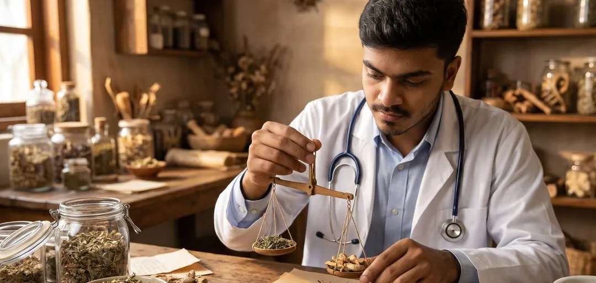

Panchakarma treatments in Patna.
55 classical and supportive therapies, from preparation to recovery. Every one is offered only after a consultation, and your plan may use a few of them or none.

Purva Karma
Preparation: digestion, oleation and sweating that ready the body for the main procedure.
Pradhana Karma
The main cleansing procedures, always doctor-led and chosen only after assessment.
Local Basti
Warm medicated oil held over one area, such as the back, knees, neck or heart region.
Dhara and External
Streams, pours, boluses, packs and massages that work through the skin.
Mouth Nose Eye
Gentle therapies for the mouth, nose and eyes, including Kriyakalpa eye care.
Paschat Karma
Recovery: graded diet, rasayana, breathing and movement after the main therapy.


Plain answers about Panchakarma, from the clinic.
Short reads for Patna families who want to understand Ayurvedic therapy before they book.


Questions families ask before they begin.

Send a request through the appointment page with your preferred date and the therapy you are interested in. Every visit is by appointment, near Bajrang Puri, Patna, and your slot is confirmed directly by the clinic before you travel.
It depends on you. A supportive therapy such as Abhyanga or Shirodhara typically takes 30 to 60 minutes. A full programme with preparation, main therapy and recovery typically runs from about one to three weeks. The exact length is decided after assessment.
Panchakarma is a structured medical procedure, not a spa routine. It is planned only after Dr. Aditya Kunal assesses you, and the intensity is adjusted to your strength. It is not suitable for everyone, which is why no therapy starts without a consultation.
Panchakarma is usually avoided or postponed during pregnancy, acute fever or infection, severe weakness, and in some heart conditions. Young children and frail elders need special care. If you have a serious or ongoing condition, your regular doctor stays in charge of it, and we work alongside, never instead.
No. Never stop or change a prescribed medicine without the doctor who prescribed it. Bring your prescriptions to the consultation so your plan is made around them.
Light, warm, freshly cooked food such as khichdi, moong dal and rice, with warm water through the day. Specific diet instructions are given for each phase, and they matter as much as the therapy itself.